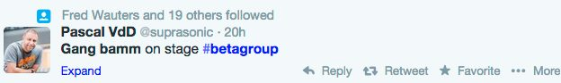

Betagroup #49: quelques réflexions à la con
This post was originally written in French.

Hier soir, je suis allé au Betagroup.
Bon, disclaimer oblige, je venais pour Sortlist et Pullreview, parce que je les connais. Donc forcément, ~~je vais en dire du bien~~, je ne vais pas en dire de mal.
Quand j'arrive dans le building U, Swarm me dit que je ne suis pas venu depuis 2010, et me félicite (de revenir j'imagine?).
Je m'assieds, prêt à être découvrir les EVS, IBA et KEYTRADE de demain (Ah mais non c'est vrai ils ne sont pas passés au Betagroup .... suis con, j'oublie chaque fois)
Bref, dans l'ordre, quelques réflexions à la con
-
Ce serait quand même bien d'apprendre l'anglais dès les primaires.
-
Si on n'a pas eu l'anglais en primaire, on fait quand même tout en anglais, ca fait bien.
-
Si finalement, tu parles super bien anglais, pas de chance, il te manque tout le reste.
-
Pour faire une belle démo de son produit, aujourd'hui, on fait des vidéos.
-
Pour faire une belle démo LIVE de son produit, aujourd'hui, on montre la vidéo pré-enregistrée il y a quelques jours, mois, semaines.
-
Une vidéo pré-enregistrée qui s'arrête, ca fait plus con, qu'une démo LIVE où on chipote un peu.
-
Les twittos ont de l'humour:

-
Une facteur de réussite, c'est quand son app est télécheargable sur l'Appstore ... ca vaut des applaudissements visiblement.
-
Dire: "We are not interested in monetizing for the moment" n'enclenche pas automatiquement l'exclusion de la scène. Après tout le PS a le même concept donc ...
-
Les boîtes malines de la soirée, ce sont EPIC et iSTORM, qui se font une petite selfpub sur twitter


-
Mais aussi ceux qui recrutent, avec cadeau à la clé. Bien ouéj.
-
On peut lancer une startup avec 2 personnes qui font comme job "General Manager". L'un de l'autre j'imagine?
-
Le Lean est en action dans la salle quand 5 personnes sur 150 lèvent la main pour valider un concept. 5 sur 150, c'est super lean.
-
"It is so passé" en parlant de ce qu'on fait, est un argument visiblement recevable pour dire "je suis innovant".
-
1001 Belges qui partage ses "Lessons learned", dommage que cela n'ait pas durer plus longtemps, c'était le plus intéressant de la soirée
-
Break-even, c'est tellement rare, qu'on a du mal à le prononcer sur scène. Dommage, parce que c'est le deuxième bon moment de la soirée, et c'est toujours la même boîte.
-
Visiblement, il y un créneau pour un système de pages jaunes & prise de rdv chez les médecins. Faut y aller à fond là ... c'est le moment :-)
-
Le Ministre bruxellois de l'Emploi, de l'Économie, de la Lutte contre l'Incendie et l'Aide médicale urgente, avait visiblement plus intéressant à faire que de voir les pitches. Et Bamm ... il est parti.
-
Je suis une merde ... et je vais encore recevoir des emails d'insultes
Comments 1
Thierry, 2014-09-17 21:43
On aimerait ne jamais préciser ces choses-là... Mais on est (1001B) ni broke...ni break-even:-) Bcp d'excitations hier soir, Delphine se prépare pour une super présentation et nos co-fondateurs (Thomas&Seb pour bien les incriminer) lui glisse un bobard...Histoire de briller:-) Il semblerait qu'on ait trouvé un public. Il semblerait que ce public aime bien se rencontrer autour d'ateliers. Il semblerait que d'envisager le crossmedia ne soit pas si bête que ça. Mais on investit bcp pour être prêt quand on débarque en dehors de nos frontières, et on va devoir vite le faire:-) Donc la RW ne suffit pas encore pour soutenir un projet de cette ampleur. Mais qui sait ce que nous réservent les 6 prochains mois? Normalement je préfère le mode FRIME mais pour une fois, relativiser un peu ne fera pas trop de mal:-)